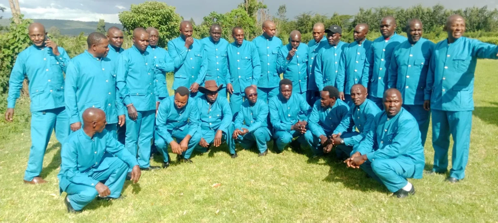

A team day
Share your group goals, timing and any accessibility needs. Discuss the outdoor space and suitable activities.
Enquire about team buildingTEAM BUILDING
Give your group time to reconnect at Joy Ripples. Share your goals, group size and preferred date so the team can help you plan.
Plan your visit
A DAY WITH PURPOSE
For workplace teams, organised groups and retreats. Activities and facilitation are agreed with the resort.
Share your group goals, timing and any accessibility needs. Discuss the outdoor space and suitable activities.
Enquire about team buildingArrange a conversation about refreshments, lunch or a shared meal for your group.
Explore group cateringEnquire about camping or accommodation alongside your team visit.
Explore campingAN EXAMPLE, NOT A FIXED PACKAGE
This sample outline can help you brief the resort. Specific activities, timings, equipment and facilitators must be confirmed.
GOOD TO KNOW
Facilitation, activity equipment and any additional charges must be confirmed in your quotation.
Your preferred date, guest count, arrival and departure times, group goals, meals and any accessibility requirements.
Request a tailored quotation. Published team building prices are not yet available.